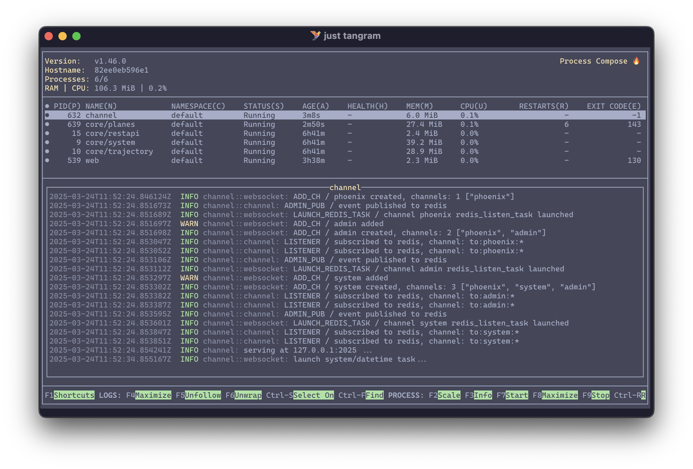
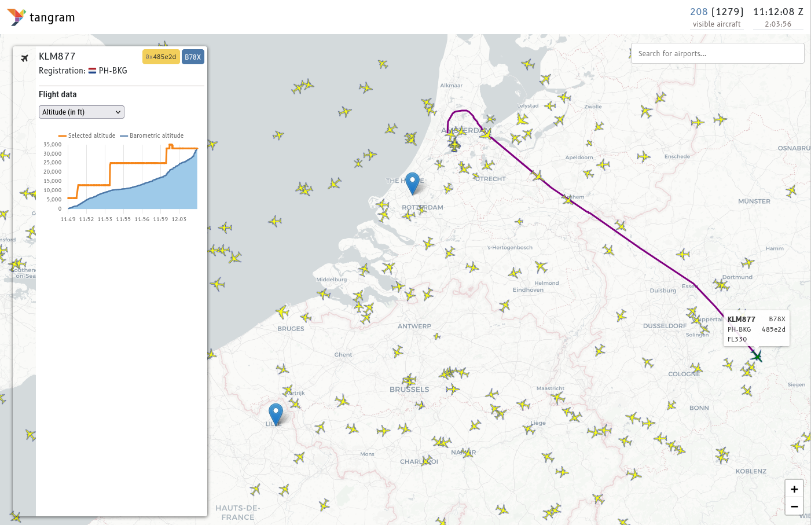

Quickstart Guide for tangram¶
How to quickly set up and run tangram with basic visualizations of aviation data
Warning
The framework has only been tested on Linux and macOS.
It may not work on Windows without additional configuration, but contributions to improve Windows compatibility are welcome!
Prerequisites¶
Before you begin, ensure you have the following tools installed:
-
just is a command runner, similar to
make, that simplifies running commands in your project. -
podman is a container engine for developing, managing, and running containers, similar to Docker.
Tip
You can have a running tangram instance in less than 5 minutes with these tools.
It will also be possible to run some of the components outside of containers, but for the quickstart, we use containers to simplify the setup.
0. Clone the Repository¶
First clone the tangram repository to your local machine:
git clone https://github.com/open-aviation/tangram
cd tangram
1. Environment Configuration¶
Create an environment file from the template:
cp .env.example .env
The file contains default configurations for a basic demo setup. You can modify it later to suit your needs.
2. Build Containers¶
Build the tangram container:
just create-tangram
3. Launch Redis¶
Start a Redis container for message passing and caching between different services:
just redis
This command will pull the Redis image if not already available and start the container.
Note
The redis container will keep running in the background, allowing other services to connect to it.
You can check if Redis is running with:
podman container ls
You can stop the container with:
podman container stop redis
4. Run the data receiver¶
Set up the data source parameters and run the jet1090 container:
just jet1090
You should now see the jet1090 console displaying data received from the source:

Note
The jet1090 executable can also be easily installed directly on your system if you prefer not to use a container. Check the jet1090 documentation for installation instructions. However, the default configuration works with a containerized version for simplicity.
Note that it is mandatory to run jet1090 locally if you want to feed data from a RTL-SDR device, as the containerized version may not have access to your local hardware: it can be parameterized for Linux (a bit complicated), but it is not possible for Apple computers due to limitations in the kernel implementation.
In that case, you need to edit some parameters in the .env file:
REDIS_URLbecomeshttp://host.containers.internal:6379(which will work thanks to port redirection explicited in thejustfile)JET1090_URLbecomeshttp://host.containers.internal:8080.
5. Launch tangram¶
In a new terminal, run the tangram container:
just tangram
The container is orchestrated using process_compose, which manages the various background processes required for tangram to function.

You may click on each process to see its logs in real-time. The web process is the web server that serves the tangram interface.
6. Access the web interface¶
Open your browser and navigate to http://localhost:2345 to access the tangram web interface.

Troubleshooting¶
| Issue | Command |
|---|---|
| Check the logs for errors | just tangram-log |
| Open a shell in the tangram container | just tangram-shell |
| Ensure all containers are running | podman container ls |
| Verify Redis connection | podman container exec -it redis redis-cli ping |
| Kill a container if needed | podman kill <container_name> (e.g. jet1090 or tangram) |
| Delete containers if needed | podman rm <container_name> (e.g. jet1090 or tangram) |
| Delete images if needed | podman rmi <image_name> (e.g. tangram:latest) |
| Clean up unused resources | podman system prune |